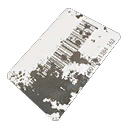
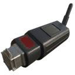
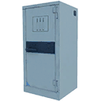
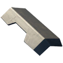
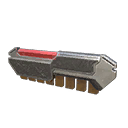
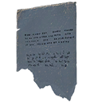
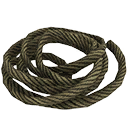
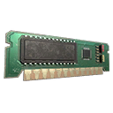
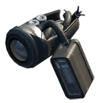
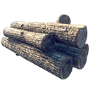

How to read the tables
One table per group of the inventory. Stack is how many fit in one inventory slot. Schematic is the crafting schematic that makes the item, with the tree it sits in, what it costs to unlock and the materials one craft takes. What it does is the game's own schematic text where there is a schematic (marked with a bar on the left), and a short plain description otherwise (also for the DLC gadgets, whose schematic text only repeats their name). Placed is how many of the item lie at fixed spots in the world files, with the regions under the number (random loot from crates, bodies and machines comes on top). The internal name and item hash are what save editors and mods use.
Medical9 items
First aid kits and other things that heal you or get you back on your feet.
| Item | Stack | Schematic | What it does | Placed | Internal name / hash | |
|---|---|---|---|---|---|---|
 | Adrenaline Shot | 20 |  Adrenaline Shot Adrenaline ShotEquipment · 160 pts | Adrenaline shots that, when consumed, will revive an unconscious player. Cannot be equipped. | 104Himfjäll 24 · Farmlands 21 · Archipelago 18 · Forest 18 · Marshlands 11 · North Coast 7 · South Coast 5 | equipment_consumable_adrenaline_013938124543 |
 | Advanced First Aid Kit | 5 | Advanced First Aid Kit Equipment · 40 pts | Advanced first aid kits that restore a large amount of the player's health. | 222Forest 67 · Himfjäll 57 · Farmlands 36 · Marshlands 25 · Archipelago 20 · North Coast 9 · South Coast 6 · Mountains 2 | equipment_consumable_firstaid_advanced_014135535880 |
 | Medical First Aid Kit | 5 |  Medical First Aid Kit Medical First Aid KitExperimental · 11 pts | Medical First Aid Kits. Properties: Medicine: significantly speeds up health recovery but also reduces movement speed for 15 seconds. | – | equipment_consumable_firstaid_beta_013635824929 |
 | Mysterious Apple | 10 | – | Listed with the medical items. It shares its icon with the Semla. | – | equipment_apple1248661129 |
 | Paramedic Response Pack | 10 | Paramedic Response Pack Equipment · 80 pts  30× Ethanol 1× Advanced First Aid Kit 30× Ethanol 1× Advanced First Aid Kit | Deployable health packs that allows you and your team to interact with it to heal up. | 26Forest 6 · Mountains 5 · Farmlands 5 · North Coast 4 · Marshlands 3 · South Coast 2 · Archipelago 1 | health_station_014101347877 |
 | Radioactive First Aid Kit | 5 | Radioactive First Aid Kit Experimental · 2 pts | Radioactive First Aid Kits. Properties: Radioactivity: significantly speeds up stamina recovery but also applies radiation poisoning for 15 seconds. | – | equipment_consumable_firstaid_alpha_01735263659 |
| Semla | 20 | – | A Swedish cream bun (the icon file is named after Fettisdagen, Shrove Tuesday). The game files list it with the medical items. | 213Himfjäll 60 · South Coast 43 · North Coast 37 · Forest 26 · Mountains 24 · Archipelago 10 · Farmlands 7 · Marshlands 6 | equipment_consumable_food_semla_01983770313 |
 | Simple First Aid Kit | 20 | Simple First Aid Kit Equipment · 1 pt | Simple first aid kits that restores a little bit of the player's health. | 498Archipelago 92 · Himfjäll 86 · South Coast 76 · North Coast 60 · Forest 59 · Farmlands 58 · Mountains 50 · Marshlands 17 | equipment_consumable_firstaid_simple_012050144797 |
 | Standard First Aid Kit | 10 | Standard First Aid Kit Equipment · 10 pts | Standard first aid kits that restore a medium amount of the player's health. | 291Archipelago 70 · Forest 57 · Himfjäll 46 · Farmlands 42 · Marshlands 29 · South Coast 25 · North Coast 14 · Mountains 8 | equipment_consumable_firstaid_standard_01154430305 |
 20×
20×  6×
6×  1×
1× Throwables and explosives11 items
Grenades, gas tanks and other things you throw, place or shoot at. Several of them are also weapons with their own damage page.
| Item | Stack | Schematic | What it does | Placed | Internal name / hash | |
|---|---|---|---|---|---|---|
 | Compressed Air Tank | 10 | Compressed Air Tank Equipment · 10 pts | Compressed gas tanks with air inside. Will cause a large shockwave to its surroundings if destroyed. | 19Marshlands 6 · Forest 5 · Mountains 4 · North Coast 2 · South Coast 1 · Farmlands 1 | equipment_propane_tank_04_air1055092846 |
 | Explosive Gas Tank | 10 | Explosive Gas Tank Equipment · 1 pt  100× Gasoline 1× Compressed Air Tank 100× Gasoline 1× Compressed Air Tank | Compressed gas tanks containing explosive materials. Will cause high levels of damage to its surroundings if destroyed. | 560Forest 186 · Farmlands 120 · Himfjäll 63 · North Coast 52 · Mountains 41 · Archipelago 40 · South Coast 34 · Marshlands 24 | equipment_propane_tank_04_explosive2925986755 |
 | Grenade Damage & weapon page | 5 | Grenade Equipment · 5 pts  2× Explosive 2× Explosive  6× Phosphorus 6× Phosphorus | Explosive hand grenades. | 99Marshlands 32 · Farmlands 22 · Archipelago 17 · South Coast 9 · Forest 7 · Himfjäll 6 · Mountains 3 · North Coast 3 | equipment_grenade_01763537339 |
 | Holy Grenade | 1 | – | The name suggests a joke grenade, a nod to Monty Python's Holy Hand Grenade. A stack holds only one. | – | equipment_grenade_holy_013189117671 |
 | Land Mine | 2 | Land Mine Equipment · 80 pts  2× Titanium 1× Compressed Air Tank 2× Titanium 1× Compressed Air Tank | Explosive land mines that detonate when anyone or anything steps on them. | 96Marshlands 27 · Forest 20 · Archipelago 19 · Farmlands 17 · Himfjäll 6 · South Coast 4 · North Coast 3 | equipment_mine_011118976650 |
| Molotov Cocktail Damage & weapon page Tactical Equipment Pack | 5 |  Molotov Cocktail Molotov CocktailDLC · free  4× Accelerant 4× Accelerant  2× Lead 2× Lead | A bottle of fuel that sets the spot where it lands on fire. Its damage is on its weapon page. | – | equipment_molotov_cocktail_011075157570 | |
 | Poison Gas Tank | 10 | Poison Gas Tank Equipment · 40 pts  4× Electrolyte 4× Electrolyte  8× Steel 8× Steel | Compressed gas tanks containing poisonous materials. Will create a lethal cloud of gas if destroyed. | 1Archipelago 1 | equipment_propane_tank_04_poison2937909347 |
| Remote-Controlled Explosive Tactical Equipment Pack | 5 | Remote-Controlled Explosive DLC · 1 pt | An explosive charge you place, then set off by remote when machines are near. | – | equipment_remote_explosive_012498753451 | |
 | Smoke Grenade | 5 | Smoke Grenade Equipment · 20 pts | Grenades that produce thick, impenetrable smoke for a short period of time. | 11Himfjäll 3 · South Coast 2 · Marshlands 2 · Forest 2 · Archipelago 1 · North Coast 1 | equipment_smoke_grenade_012665528130 |
 | Snow Pile | 5 | – | A pile of snow to carry (internal name snowball_dispenser_01_held: the held version of a snowball dispenser). | – | snowball_dispenser_01_held4065011419 |
 | Snowball Damage & weapon page | 5 | – | A snowball to throw. | – | equipment_snowball_033697498575 |
Lures and distractions13 items
Noise makers and flares that pull machines away from you, or confuse them for a moment.
| Item | Stack | Schematic | What it does | Placed | Internal name / hash | |
|---|---|---|---|---|---|---|
 | Boombox | 10 | Boombox Equipment · 40 pts 4× Electrolyte  2× Copper 2× Copper | Boomboxes that act as long-range lures with medium effectiveness. | 188Farmlands 30 · South Coast 28 · Mountains 26 · Forest 25 · Himfjäll 23 · North Coast 22 · Archipelago 20 · Marshlands 14 | lure_boombox2741915458 |
 | Emergency flare | 5 | Emergency flare Equipment · 5 pts | Emergency road flares that machines see as targets. Medium-range lures with high effectiveness. | 169Archipelago 57 · Forest 39 · Marshlands 24 · Farmlands 22 · South Coast 12 · Mountains 9 · North Coast 3 · Himfjäll 3 | equipment_flare_lure_011262822351 |
 | Emergency flare (Sticky) | 5 | Emergency Flare (Sticky) Equipment · 80 pts | Emergency flares that machines see as targets. Modified to stick to the first surface it encounters. | 30Forest 9 · Archipelago 7 · Farmlands 4 · North Coast 3 · Mountains 2 · Marshlands 2 · Himfjäll 2 · South Coast 1 | equipment_flare_lure_022884458829 |
| Explosive Toy Lure Tactical Equipment Pack | 5 | Explosive Toy Lure DLC · 7 pts | A noisy toy that draws machines to it, then explodes. | – | equipment_lure_bomb_012624088349 | |
 | Field Radio | 10 | Field Radio Equipment · 1 pt  1× Car Battery EMP 1× Car Battery EMP  1× Radio 1× Radio | Field radios that creates mobile rendezvous points for you and your friends, allowing them to fast-travel to that spot. | 117Farmlands 27 · Archipelago 19 · Forest 18 · Mountains 15 · Marshlands 12 · North Coast 12 · South Coast 8 · Himfjäll 6 | field_radio_012159829079 |
 | Firework | 5 | Firework Equipment · 20 pts | Fireworks that overload a machine's threat-identifying circuits when thrown near them. | 219Forest 74 · Farmlands 73 · South Coast 48 · Archipelago 14 · Marshlands 4 · Mountains 3 · North Coast 3 | equipment_flare_distraction_012259069730 |
 | Firework Box | 10 | – | The game files list it with the lures and distractions (internal name distraction_firework_box). | – | equipment_distraction_firework_box_011698547043 |
 | Heavy Comm. Array Lure | 10 | – | The internal name lure_commarray_03 suggests a lure built from a communication array; Heavy is the third of three sizes. | – | equipment_lure_commarray_033717839859 |
 | Light Comm. Array Lure | 10 | – | The internal name lure_commarray_01 suggests a lure built from a communication array; Light is the first of three sizes. | – | equipment_lure_commarray_01338795721 |
 | Lunar New Year Fireworks | 10 | – | The internal name makes it a second version of the Firework Box (firework_box_02), named for Lunar New Year. | – | equipment_distraction_firework_box_023578271636 |
 | Medium Comm. Array Lure | 10 | – | The internal name lure_commarray_02 suggests a lure built from a communication array; Medium is the second of three sizes. | – | equipment_lure_commarray_021059321529 |
| Radio | 10 | Radio Equipment · 1 pt 2× Electrolyte 2× Copper | Noisy portable radios that's bound to draw the attention of nearby machines. | 331Forest 68 · Archipelago 51 · South Coast 44 · Farmlands 44 · Himfjäll 36 · North Coast 34 · Mountains 33 · Marshlands 21 | lure_radio_equipment2457910257 |
 | Toy Car Lure DLC | 5 | Toy Car Lure DLC · free | A remote-controlled toy car you drive to pull machines away from you. | – | equipment_rc_car_lure_013251476746 |
 4×
4×  4×
4×  2×
2× field_radio_01). They are counted as the plain Radio here, and the Field Radio's own 117 are separate.Tools and gadgets17 items
Optics, lockpicks, deployable turrets, repair kits and other gadgets.
| Item | Stack | Schematic | What it does | Placed | Internal name / hash | |
|---|---|---|---|---|---|---|
 | Ammo Pack | 10 | Ammo Pack Equipment · 20 pts 1× Car Battery EMP 1× Grenade | Deployable ammo packs that supplies you and your team with extra ammo for your currently equipped weapon. | 4Farmlands 2 · Mountains 1 · North Coast 1 | ammo_station_013026458433 |
 | ApexView 7x42 Binoculars | 1 | – | Binoculars with a rangefinder (7×42). | – | equipment_optics_rangefinder_binoculars_011031809081 |
 | Companion Repair Pack | 5 | – | Repairs your companion's armor. | – | equipment_comp_armor_repairpack791848732 |
 | Digital Camera | 1 | – | A camera; its internal name (optics_camera) puts it in the optics family with the binoculars. | – | equipment_optics_camera_013601795321 |
 | Flashlight | 1 | – | A hand-held light. | 62Forest 22 · Archipelago 19 · Himfjäll 6 · North Coast 5 · Marshlands 4 · Farmlands 4 · South Coast 1 · Mountains 1 | equipment_flashlight_014134301914 |
 | Gnome Pod | 5 | – | The icon file calls it a friendly gnome pest; going by that, a garden-gnome variant of the Tick Pod. | – | equipment_gnome_pest_013039539537 |
 | Hacking Dart DLC | 5 | Hacking Dart DLC · 1 pt | A dart that turns the machine it hits to your side for a while. | – | equipment_hacking_dart_012063134473 |
 | Lockpick Hairpin | 20 | Lockpick Hairpin Equipment · 5 pts | Lockpicks. Used to gain access to lightly secured doors, if you have unlocked the appropriate skill. | – | equipment_lockpick_012639874841 |
| Portable Cover Tactical Equipment Pack | 5 | Portable Cover DLC · 4 pts | A shield you set down and take cover behind. | – | equipment_portable_cover_01883405658 | |
| Portable Homing Turret DLC | 5 | Portable Homing Turret DLC · 2 pts | A turret you set down that fires homing missiles at machines near it. | – | equipment_autonomous_turret_02987795287 | |
| Portable Machine Gun Turret Tactical Equipment Pack | 5 | Portable Machine Gun Turret DLC · 2 pts 4× Electrolyte  4× Aluminum 4× Aluminum | A turret you set down that fires a machine gun at machines near it. | – | equipment_autonomous_turret_011919173343 | |
 | Remote-Controlled Tick DLC | 5 | Remote-Controlled Tick DLC · 4 pts | A Tick you steer by remote control and blow up next to machines. | – | equipment_rc_tick_013706814771 |
 | Repair Kit | 10 | Repair Kit Equipment · free | Repair Kits for performing mechanical repairs and maintenance. | 2Farmlands 2 | equipment_consumable_repairkit_013961421981 |
| Sensory Jammer DLC | 5 | Sensory Jammer DLC · 7 pts 5× Electrolyte 5× Copper | Disrupts the sensors of the machines around it, so they have a harder time finding you. | – | equipment_sensory_jammer_011447161674 | |
 | Tick Pod | 5 | – | The icon file calls it a friendly pest, which suggests a pod with a Tick on your side. | – | equipment_pest_012716516313 |
 | Vantage 8x42 Binoculars | 1 | – | Binoculars (8× magnification, 42 mm lenses, as the name says). | 72Forest 35 · Archipelago 13 · Marshlands 7 · North Coast 7 · Farmlands 4 · Mountains 3 · South Coast 3 | equipment_optics_binoculars_012479877886 |
 | Venture 5x30 Rangefinder | 1 | – | A rangefinder (5×30). | – | equipment_optics_rangefinder_013656899843 |
Power and fuel8 items
Fuel, fuel cells and EMP battery packs.
| Item | Stack | Schematic | What it does | Placed | Internal name / hash | |
|---|---|---|---|---|---|---|
| Car Battery EMP | 10 | Car Battery EMP Equipment · 10 pts 2× Electrolyte  4× Rubber 4× Rubber | Car batteries, rigged to trigger an electromagnetic pulse when hit. | 24Marshlands 12 · North Coast 5 · Farmlands 4 · Mountains 1 · Archipelago 1 · Forest 1 | equipment_emp_batterypack_car_01346711624 |
| Gasoline | 100 | Gasoline Equipment · free 4× Accelerant 2× Lead | Gasoline for the motorbikes. | 1,203Himfjäll 272 · Forest 259 · Farmlands 133 · South Coast 131 · Archipelago 128 · Mountains 105 · North Coast 97 · Marshlands 78 | equipment_consumable_fuelcan_011190238928 |
 | Large EMP Cell | 10 | – | Its internal name (emp_batterypack) puts it in the same family as the Car Battery EMP. | 1Archipelago 1 | equipment_emp_batterypack_large_011125625472 |
 | Large Fuel Cell | 10 | – | – | – | equipment_fuelcell_032562372320 |
 | Medium Fuel Cell | 10 | – | – | – | equipment_fuelcell_021637681994 |
 | Medium-sized EMP Cell | 2 | – | Its internal name (emp_batterypack) puts it in the same family as the Car Battery EMP. | 2Mountains 2 | equipment_emp_batterypack_medium_012787308669 |
 | Small EMP Cell | 5 | – | Its internal name (emp_batterypack) puts it in the same family as the Car Battery EMP. | 17Mountains 10 · North Coast 7 | equipment_emp_batterypack_small_012663984373 |
 | Small Fuel Cell | 10 | – | – | – | equipment_fuelcell_011409666988 |
Vision modules7 items
Modules for the vision modes; the Dual Mode and Full modules combine two or three of the single modes.
| Item | Stack | Schematic | What it does | Placed | Internal name / hash | |
|---|---|---|---|---|---|---|
 | Dual Mode IR / OPV Module | 1 | – | Infrared and object-penetrating vision in one module. | – | equipment_vision_module_hv_xr342766485 |
 | Dual Mode Low Light / IR Module | 1 | – | Low-light and infrared vision in one module. | – | equipment_vision_module_hv_nv3912629024 |
 | Dual Mode Low Light / OPV Module | 1 | – | Low-light and object-penetrating vision in one module. | – | equipment_vision_module_nv_xr1399608134 |
 | Full Vision Module | 1 | – | All three vision modes in one module. | – | equipment_vision_module_hv_nv_xr1524218344 |
 | IR Vision Processor | 1 | – | Infrared vision. | – | equipment_vision_module_hv3219589971 |
 | Low Light Vision Amplifier | 1 | – | Low-light (night) vision. | – | equipment_vision_module_nv3311094823 |
 | Object Penetrating Vision Modulator | 1 | – | Object-penetrating vision: see through objects. | – | equipment_vision_module_xr541519494 |
Other2 items
The two items the game files don't put in any of the groups above.
| Item | Stack | Schematic | What it does | Placed | Internal name / hash | |
|---|---|---|---|---|---|---|
 | Machine Companion | 0 | – | The item behind your machine companion. See the companion page. | – | comp_spawner2763470178 |
 | Slag | 20 | – | – | – | slag2745069990 |
Tips from the numbers
- The items lying around most often at fixed spots are Gasoline (1203), Explosive Gas Tank (560), Simple First Aid Kit (498), Radio (331), Standard First Aid Kit (291).
- Some are almost never placed by hand: Repair Kit (2), Poison Gas Tank (1). Craft those instead of hoping to find them.
- Medium-sized EMP Cell (2), Large EMP Cell (1) are just as rarely placed and have no schematic either, so random loot is the main way to get them.
- The Adrenaline Shot is the last schematic of the equipment tree: it costs 160 points by itself and 629 points with everything before it.
- Gasoline stacks to 100, more than anything else here; the Gasoline recipe makes it from accelerant and lead, and the Explosive Gas Tank recipe takes 100 of it.
Stack sizes in this list: 0 (1 item), 1 (13 items), 2 (2 items), 5 (24 items), 10 (21 items), 20 (5 items), 100 (1 item). The stack of 0 is the Machine Companion, which you never carry as an item.
Keys and quest items46 items
46 items in the game's list are keys, bunker barcodes, keycards and things a mission hands you. They have their own Keys & barcodes page with what each one opens, its content pack and the missions that use it. Here they are at a glance; most tiles link to their entry there.

"Redovisningskansli Öst" keycardkey_doorkey_snusskey
A tracking devicefnix_tracking_device
Ammo cratesexp02_sm090_ammoBasement storage keykey_doorkey_klinte_basementBergfinken access keycardkey_bunkerkey_evilfoaBjörn's barn keykey_doorkey_wm39Crafting Container keykey_doorkey_crafting07Floppy diskkey_doorkey_protokey
FNIX armor plate 1key_rivkey_key01FNIX armor plate 2key_rivkey_key02FNIX armor plate 3key_rivkey_key03
FNIX Coordinate Datatyrant_key_fnix_01key_bunkerkey_foav2FOA 53 lab barcodekey_bunkerkey_foaGarage Keykey_doorkey_crafting04Hangar Keykey_doorkey_crafting03Hermelinen Bunker entry barcodekey_bunkerkey_hermelinenHjortqvarns Sågverk keykey_doorkey_wm27aHouse keykey_doorkey_wm16bkey_testkey_01key_doorkey_ingridKey to Stora Dyrbo barnkey_doorkey_wm22bKey to the stables at Glättra.key_doorkey_wm17Key to Veronika's studykey_doorkey_veronikaKeycard to Von Ulmer's studykey_doorkey_vonulmer2Loadout storage keykey_doorkey_weaponstore_01Minken Bunker entry barcodekey_bunkerkey_kasebergMysterious keykey_doorkey_norrmyra
Mysterious transcriptionexp02_sm080_documentMården Bunker entry barcodekey_bunkerkey_mardenOffice keykey_doorkey_lumbercamp
Pile of ropesexp02_sm080_ropeSkvadern Bunker entry barcodekey_bunkerkey_skvadernSkvadern storage keykey_doorkey_skvadern_storageSorken Bunker entry barcodekey_bunkerkey_sorken
Soviet Coordinate Datatyrant_key_soviet_01key_doorkey_am05Storage Keykey_doorkey_crafting02Supply room keykey_doorkey_sm_04
Tank vision moduleexp02_mm100_keyUttern Bunker entry barcodekey_bunkerkey_utternVesslan Bunker entry barcodekey_bunkerkey_vesslanVon Ulmer's residence keykey_doorkey_vonulmerVon Ulmer's safe keykey_doorkey_vonulmersafe
Wood logsexp02_sm080_logÖstra Mark barn storage keykey_doorkey_wm19Companion items75 items
75 more items belong to the machine companion: its armor, paint jobs, light kits, voice boxes, modules and weapons. They are on the Companion page, with the companion armor schematics and the packs the cosmetics come from.